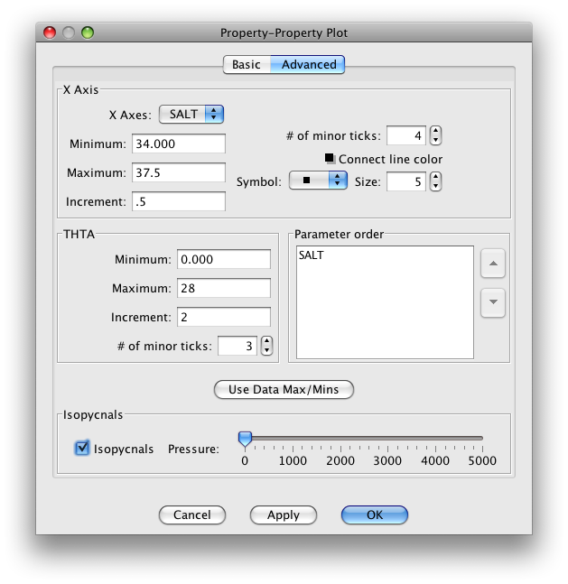
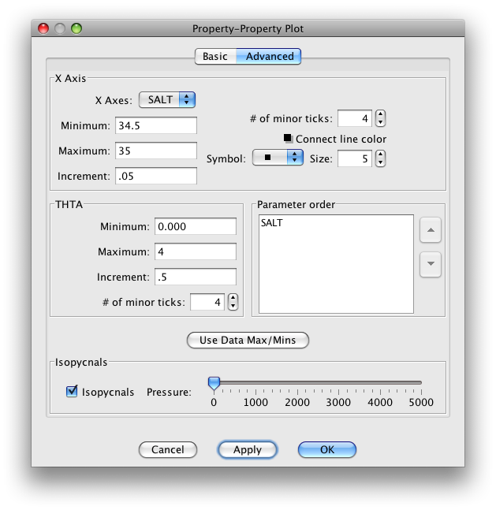
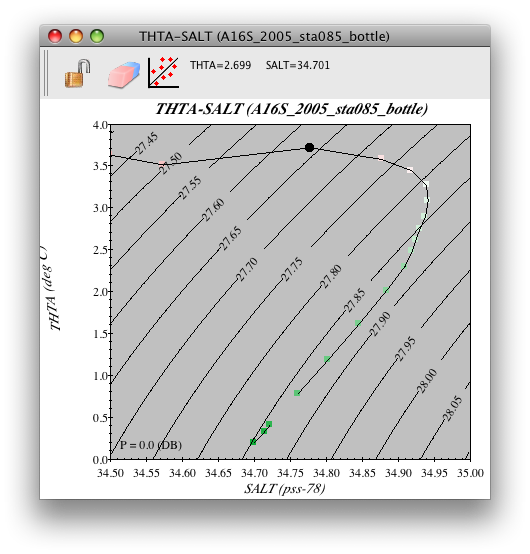

Example 3C: Effect of Temperature and Salinity on Compressibility¶
As discussed in DPO 3.5.4, seawater is slightly compressible.
Files that may be needed or created in this example:
A16S_2005_sta085_bottle.joa
Learn More: Water Compressibility and Density
As a simplification in some aspects of ocean fluid dynamics, seawater can be treated as incompressible. But when one wishes to compare seawater densities carefully, the compressibility of seawater, though very small, can be important.
That is, if a parcel of seawater were to be displaced adiabatically - without gain or loss of heat - from a lower pressure (shallow) to a higher pressure (deep), at the higher pressure its density would be a higher value than it was at the lower pressure. In other words, even when there is no change in the potential temperature or salinity of a seawater parcel, simply by moving it to higher pressure it will become denser because it is more compressed. In addition, as noted in the DPO text, the amount of compression a given parcel undergoes for a specific pressure change depends on its temperature; namely, colder waters are slightly more compressible than warmer waters.
Therefore, consider two parcels of seawater at the sea surface, with equal density at the sea surface, but one is warm and the other is cool.
Note
If they are of equal density of course the warm one must be saltier than the cold one. If you displace both of the parcels to a higher pressure (deeper) - without loss or change of heat (adiabatically) - the colder one will have compressed more than the warmer seawater parcel. Down deep, it is now denser than the warmer seawater parcel.
Note
Because this process was adiabatic and without mixing, the potential temperature and salinity of each parcel stay exactly the same: on a potential temperature versus salinity X-Y plot the two data points stay at their locations relative to the axes.
Go back to Exercise 3B-01 where you made the temperature versus salinity plot for the A16_2005_sta085_bottle.joa data.
Make that plot again, but now using potential temperature (THTA) instead of temperature for the Y-axis, and bottle salinity (SALT) instead of CTD salinity for the x-axis.
Adjust the plot parameters in the Advanced panel of the Property-Property Plot dialog box until it looks like this:

FIG 3c-01 The Advanced panel of the Property-Property Plot dialog box¶
Try sliding it to 4000 (4000 decibars), while watching the plotted isopycnal lines on the potential temperature versus salinity plot.
Notice that the numeric isopycnal line label values (these are density-related sigma units as explained in DPO) both increase with increasing pressure (as you slide the slider to the right) and also change their slope.
Notice how they appear to flatten as pressure increases? Compared to the situation which prevails at sea surface pressure (0 decibars), at 4000 decibars a given change in temperature now has a smaller effect in changing density.
To visualize the deep water at the A16_2007 station 085 bottle data plot, select the deep water portion of your JOA potential temperature versus salinity plot (the part from 0 to 4 °C and salinity 34.5 to 35), i.e.
Set up the Advanced panel of the Property-Property Plot dialog box like this:

FIG 3c-04 Advanced panel of the Property-Property Plot¶
After you click on OK, you should see this plot:

FIG 3c-05 JOA Property-Property plot for station 85 set up as in FIg 3c-04¶
Note that the coldest (and deepest) waters have a lower density, expressed as sigma-0, than the warmer (and somewhat shallower) waters immediately above.
Now try going back and forth between the dialog box and the plot to try different reference pressures for the isopycnals. You will see that the apparent instability (apparent dense water on top of less dense water) in the deep water when 0 decibars was used for the isopycnal reference pressure goes away when an appropriate deep reference pressure (ca. 4000 decibars) is used.
Examine
Notice that at A16_2007 station 085, in the deeper layers there is a relative salinity maximum near 2000 meters which, at ca. 3.2 °C, is significantly warmer than the relatively fresh, cold bottom waters underneath.
This particular layering of deep temperature and salinity is characteristic of the Atlantic Ocean, and presents very well the relative layer-to-layer change of temperature and salinity needed to best highlight the importance of using an appropriate reference pressure to examine deep water density. In later exercises, we will contrast the layering in the other oceans.